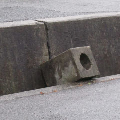
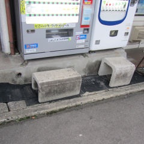
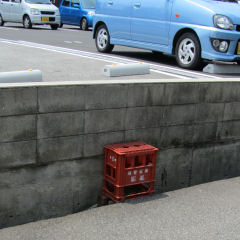
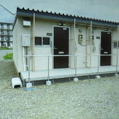

現場の人は
とても原始的な橋を
発明する。
このブロックを
踏み台にする事で
歩行距離を
ショートカットできる。
事前に全く
何の説明が無くても
約１／４の人間が
最短経路を探索して
このルートをチョイスした。

ひっくり返した
Ｕ字溝の下に
ゴムを敷いて
ユーザーが
ひっくり返らないように
工夫されたデザイン。

現住民は
本来、清酒のビンを運ぶ
コンテナも足場として
代用する。
彼らは、いつ、どこで
これらの使用法を
学習するのか？
謎だ。

宮城県の
仮設住宅でも
このアイデアは
継承されているようだ。